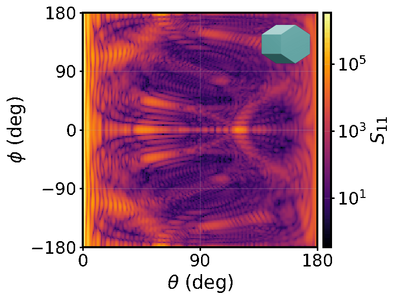

Fixed-Orientation Scattering Patterns

With a little work, it's possible to generate 2D fixed-orientation scattering patterns. This example shows one possible way of doing this. Intensity is the usual quantity of interest but, since GOAD computes the full Mueller matrix, polarimetric quantities are also possible.
Setup
The usual stuff... Create a directory to work in, install the GOAD package from the Python distribution however you like.
mkdir -p examples/fixed-orientation-patterns
cd examples/fixed-orientation-patterns
python3.11 -m venv .venv
source .venv/bin/activate
pip install goad-py
conda create -n goad-fixed-orient python=3.11 -y
conda activate goad-fixed-orient
pip install goad-py
uv venv --python 3.11
source .venv/bin/activate
uv pip install goad-py
Geometry
Here, the smooth hexagonal column is used as a simple example geometry.
Imports
Some imports for the actual code.
from pathlib import Path
from goad import (
BinningScheme,
Euler,
EulerConvention,
Geom,
Mapping,
MultiProblem,
Orientation,
Settings,
ZoneConfig,
)
Orientations
Set up the orientations that should be looped over.
EULER_CONVENTION = EulerConvention("ZYZ")
# Six orientations of a hexagonal column, sweeping the gamma rotation.
EULERS = [
(0.0, 30.0, 0.0),
(0.0, 30.0, 10.0),
(0.0, 30.0, 20.0),
(0.0, 30.0, 30.0),
(0.0, 30.0, 40.0),
(0.0, 30.0, 50.0),
]
Config
Define the job config. Edit as needed.
One or more zones can be configured to control where the far-field is computed and at what angular resolution.
# A 2D zone over the full sphere, fine enough to render as an image.
zones = [
ZoneConfig(
BinningScheme.interval(
thetas=[0, 90, 180],
theta_spacings=[0.5, 1],
phis=[0, 360],
phi_spacings=[2],
)
)
]
The full job settings:
GEOM_PATH = "hex.obj"
OUTPUT_ROOT = Path("runs")
# Load the particle geometry once with its refractive index.
geoms = Geom.from_file(GEOM_PATH, [1.31 + 0j])
settings = Settings(
wavelength=0.532,
medium_refr_index=1.0 + 0j,
zones=zones,
mapping=Mapping("ad"),
beam_power_threshold=0.001,
beam_area_threshold_fac=0.001,
cutoff=0.99999,
max_rec=10,
max_tir=20,
seed=None,
directory=str(OUTPUT_ROOT),
coherence=True,
quiet=False,
)
Looping over orientations
Loop over orientations, running a single-orientation GOAD computation for each. save() takes an optional argument where you can choose the name of the output directory.
Note: While
MultiProblemis the naming convention, in general you can choose whether the solve is a single or an average over multiple orientations.
OUTPUT_ROOT.mkdir(exist_ok=True)
for i, (alpha, beta, gamma) in enumerate(EULERS):
settings.orientation = Orientation.discrete(
eulers=[Euler(float(alpha), float(beta), float(gamma))],
euler_convention=EULER_CONVENTION,
)
out_dir = OUTPUT_ROOT / f"orient_{i:04d}"
out_dir.mkdir(exist_ok=True)
mp = MultiProblem(settings, geoms)
mp.solve()
mp.save(str(out_dir))
Run it:
python fixed_orientation_patterns.py
Results
Each call to save() creates an output directory containing the scattering results for a particular orientation.